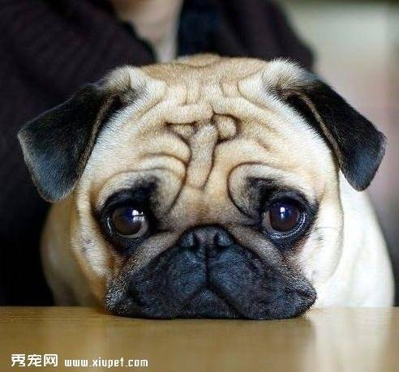

巴哥犬
巴哥犬（或稱哈巴狗）富有魅力而且高雅， 18世紀末正式命名為"巴哥"，其詞意古語為鬼，獅子鼻或小猴子的意思。
巴哥犬是體貼，可愛的小型犬鐘，不需要運動或經常整理背毛，但需要同伴。容貌皺紋較多，走起路來象拳擊手是其特徵。
它是以咕嚕的呼吸聲及象馬一樣抽鼻子的聲音作為溝通的方式。同時，此犬具備優良及愛乾淨的個性，這些特色便成為廣受喜愛的原因。
總體來看，通常外觀呈正方形而且短胖。歪斜、長腿或腿太短的巴哥犬都不受歡迎。

連到首頁
連到第3頁
連到第4頁